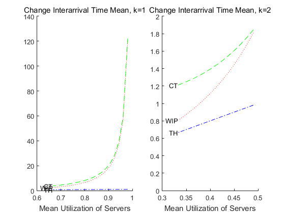
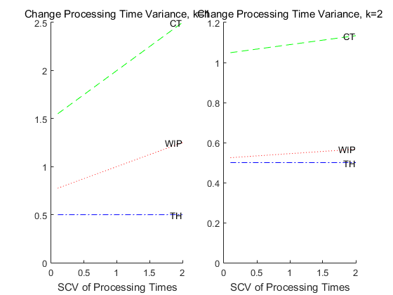
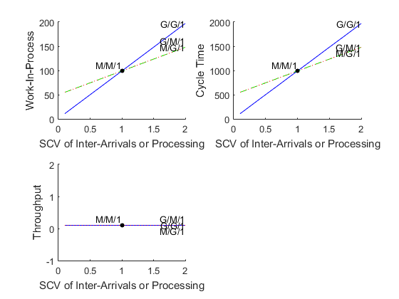
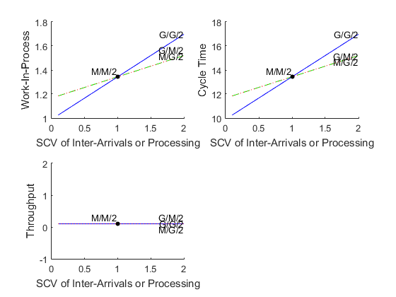
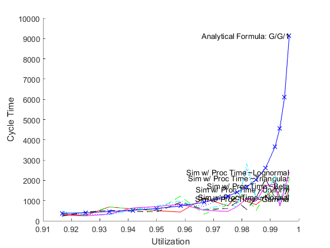
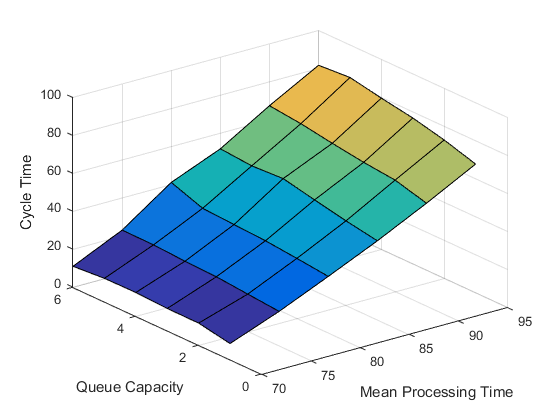

Single Workstation Models
The contents of the SingleWorkstationModels folder concern certain results from queueing theory applied to the analysis of a production line. The fundamental unit of analysis is a single workstation, which in queueing theory is sometimes called a single queueing node. A single workstation is abstractly defined as a FIFO queue with infinite capacity, followed by k parallel servers/ machines/ processors which can together process at most k jobs/ parts/ entities at a time:
Hopp & Spearman (Factory Physics, 2000, ed. 2) collect a variety of relevant queueing theory results in chapter 8. Their goal is to understand the effects of various sources of variability on the performance measures Work-In-Process, Cycle Time, and Throughput, both for a single workstation and also larger systems built of them. Hopp & Spearman note that "actual process time (including setups, downtime, etc.) typically represents only a small fraction (5 to 10 percent) of the total cycle time in a plant ... The majority of the extra time is spent waiting for various resources. Hence, a fundamental issue in factory physics is to understand the underlying causes of all this waiting. The science of waiting is called queueing theory." (pages 264-265)
One set of contributions in this section concerns analytical formulas:
- Implementations of analytical approximations for M/M/1, M/M/k, G/G/1, and G/G/k workstations.
- Implementations of analytical approximations for a G/G/1 workstation which adjust for non- preemptive setups, preemptive failures, or both.
- Implementation of a "linking equation" to characterize the departure process of one workstation, which may be the arrival process to the next. (UPDATE: Since the linking equation is primarily used to compute analytical results for multiple workstations in series, this content has been moved to the ProductionLineModels section.)
A different set of contributions concerns simulation:
- Simulation library blocks for a G/G/k workstation, which may feature non-preemptive setups, preemptive failures, and batching. Each allows choosing from a variety of probability distributions for the arrival and service processes.
Most importantly, a collection of DEMO scripts is included showing how to use the analytical formulas, the simulation models, and both to compare their results. Each DEMO script is a usage example, an illustration of what is possible, an idea for a lab experiment. The collection is certainly not exhaustive, and it is hoped that they will inspire users to create more, plus transcribe the good ones into carefully-defined lab experiments for education. The remainder of this overview summarizes what the included DEMO scripts do.
Contents
- Analytical Approximation: Behavior of Single Workstation
- Analytical Approximation: M (Markovian) versus G (General)
- Analytical Approximation vs Simulation: Behavior of Single Workstation
- Analytical Approximation vs Simulation: Preemptive Failures
- Analytical Approximation vs Simulation: Non-Preemptive Setups
- Simulation: Demonstrate Parameter Sweeps and Replications
- Simulation: Parallel Process Batching (processing time is for entire batch)
- Simulation: Serial Process Batching (processing time is for each element in a batch)
Analytical Approximation: Behavior of Single Workstation
The following demo uses the closed-form queueing theory approximations from Hopp & Spearman, chapter 8, to examine how the performance measures work-in-process, cycle time, and throughput respond for a single workstation as various things change - the mean and variance of queue inter- arrival times, the mean and variance of server processing times, and the number of servers/ machines/ processors k. Several interesting things can be visualized in the results, including Little's Law, the response of the system to increasing utilization, and the response of the system to increasing variability in interarrival or processing times.
Parameters which can be changed by a user include interarrival time mean, interarrival time variance, processing time mean, and processing time variance.
DEMO_QTheory_SweepArrivalProcMeanVar_SingleWorkstationThCtWip 
Analytical Approximation: M (Markovian) versus G (General)
The following demo uses the closed-form queueing theory approximations from Hopp & Spearman, chapter 8, and compares the Markovian case with the General case. The expected result is that if means and variances for Inter-Arrival times and Processing times have SCVs near one, then the G/G case should match the M/M case. If at least one SCV is far from one, then the cases should diverge.
Parameters which can be changed by a user include interarrival time mean, processing time mean, and the range of SCVs to test in the General case (Markovian -> SCV=1).
DEMO_QTheory_MvsG_SingleWorkstationThCtWip 
Analytical Approximation vs Simulation: Behavior of Single Workstation
The following demo compares queueing theory approximations and discrete-event simulation. It evaluates the performance measures work-in-process, cycle time, and throughput using closed-form queueing theory approximations from Hopp & Spearman, chapter 8, and then tests the quality of those approximations by comparing with discrete-event simulation results. Utilization is swept over, and at the time of writing focus is on high utilizations, because that is where deviations (if any) are expected.
Parameters which can be changed by a user include interarrival time distribution, mean, and variability, processing time means & variability (proc time means are used to vary utilization, and the demo is configured to generate a separate curve for each processing time distribution), the single workstation's queue capacity, and its number of servers.
DEMO_QTvsSim_SweepUtil_SingleWorkstationThCtWip

Analytical Approximation vs Simulation: Preemptive Failures
Hopp and Spearman offer equations 8.4-8.6 (ed. 2) for effective process time in the case of preemptive failures. However, they derive these formulas by assuming that time-until-failure is exponentially distributed (SCV=1). Simulation allows arbitrary SCVs, so it can be tested how closed-form and simulation results compare when the exponential assumption is relaxed.
Parameters which can be changed by a user include the distribution, mean, and variability of interarrival time, processing time, time-until-failure (for this a range of SCVs to sweep over), and time-to-repair.
DEMO_QTvsSim_SweepTimeUntilFailureSCV_SingleWorkstationThCtWip
Analytical Approximation vs Simulation: Non-Preemptive Setups
Hopp and Spearman offer equations 8.7-8.9 (ed. 2) for effective process time in the case of non-preemptive setups. However, they derive these formulas by assuming that count-between-setups is moderately variable (e.g. the mean and standard deviation are equal, a discrete analog of the exponential distribution). Simulation allows arbitrary SCVs, so it can be tested how closed-form and simulation results compare when the exponential assumption is relaxed.
Parameters which can be changed by a user include the distribution, mean, and variability of interarrival time, processing time, count-until-setup (for this a range of SCVs to sweep over), and setup time.
DEMO_QTvsSim_SweepCountUntilSetupSCV_SingleWorkstationThCtWip

Simulation: Demonstrate Parameter Sweeps and Replications
This is a mechanical script written to demonstrate sweeping over two variables, plus replications, and then visualizing the results in a surface plot. It may be somewhat interesting that one of the arbitrarily-chosen swept variables is the single workstation's queue capacity, because any finite value acts as a WIP cap. Any of the performance measures [WIP, CT, TH, U] can be plotted against the two swept variables, and cycle time is the arbitrary choice at the time of writing.
DEMO_Sim_SweepQueueCapAndProcRate_SingleWksThCtWipUtil
Simulation: Parallel Process Batching (processing time is for entire batch)
The purpose of the following demo is to reproduce figure 9.6 in Hopp & Spearman (ed. 2). The demo invokes the simulation model GGkWorkstation_MakeAndMoveBatches_Parallel (through its wrapper function) over a range of process batch sizes with parallel batch processing. Any of the performance measures [WIP, CT, TH, UTIL] can be plotted against batch size; Hopp & Spearman's figure 9.6 shows cycle time, so that is what is generated at the time of writing.
Parameters which can be changed by a user include a range of process batch sizes to sweep over, a transfer batch size, the distribution, mean, and variability of interarrival time and processing time (parallel processing = for the whole batch), and the number of servers.
%DEMO_Sim_ParallelBatchProcessing_SingleWorkstationThCtWipUtil %No sweeping, output-to-workspace version
DEMO_Sim_SweepBatchSizeParProc_SingleWorkstationThCtWipUtil
Simulation: Serial Process Batching (processing time is for each element in a batch)
The purpose of the following demo is to reproduce figure 9.5 in Hopp & Spearman (ed. 2). The demo invokes the simulation model GGkWorkstation_MakeAndMoveBatches_SerialWithSetups (through its wrapper function) over a range of process batch sizes with serial batch processing and setups between batches. Any of the performance measures [WIP, CT, TH, UTIL] can be plotted against batch size; Hopp & Spearman's figure 9.5 shows cycle time, so that is what is generated at the time of writing.
Parameters which can be changed by a user include a range of process batch sizes to sweep over, a transfer batch size (which enables choosing with or without lot splitting), the distribution, mean, and variability of interarrival time and processing time (serial processing = for each entity in a batch), and a deterministic setup time between batches.
%DEMO_Sim_SerialBatchProcessing_SingleWorkstationThCtWipUtil %No sweeping, output-to-workspace version
DEMO_Sim_SweepBatchSizeSerialProc_SingleWorkstationThCtWipUtil